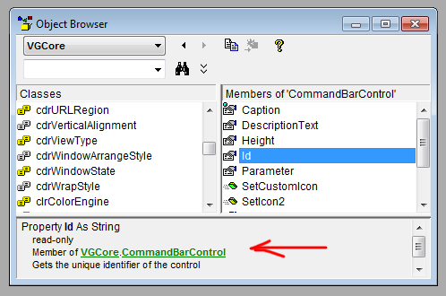

Почему в Corel VBA такая непонятная работа с элементами интерфейса?
Я, конечно, понимаю, что это редко кому бывает нужно, но все таки. Бывают ситуации, когда хочется, чтобы макрос сам создавал себе пункт меню, кнопку для вызова и т.д., без ручного лазания по менюшкам. И тут сразу сталкиваемся с проблемой, что корректного программного решения не существует: свойства CommandBars и MainMenu до сих пор недокументированы, а значит, работа через них - чистое хакерство! :-( Ну а раз хакерство, то и поддержка соответствующая. Начать с того, что добавить можно только "Пользовательскую кнопку" через CommandBars().Controls.AddCustomButton . То есть, ни нормальный пункт меню, ни подменю, ни что иное создать невозможно - только дурацкую надпись с иконочкой, положение которой к тому же нельзя регулировать. Причем, даже такую штуку можно создать только в верхнем основном меню или на некоторых панелях - никуда в другое место поставить ее просто невозможно. Удалить или переместить ее тоже программно нельзя, поменять действие на ней или, хотя бы посмотреть его - тоже нельзя! Такие свойства в объекте Control просто отсутствуют. Можно, разве что, поменять заголовок и подсказку, но смысла в этом нет никакого - ведь при перезапуске корела изменения теряются! Зато, для какой-то уму не постижимой цели, создатели VBA специальным параметром сделали в AddCustomButton возможность создавать "временную" кнопку, которая пропадает при переоткрытии панели. Что они курили перед этим, я даже боюсь представить.
И в довершение ко всему - в VBA напрочь отсутствует возможность прямого доступа к уже существующей кнопке. То есть, чтобы найти интересующий пункт меню, даже если знаешь его ID, нужно обязательно перебирать все Controls, пока нужный не найдешь. Причем, данная операция тоже не является корректной! Я пару раз встречал ситуацию, когда Controls.Count возвращал "левое" количество элементов, а, как известно, обращение к несуществующему элементу вызывает физический крах всего корела и никакие обработчики ошибок тут не спасают.
Так вот, мне кто-нибудь объяснит - все действительно так сурово или я туплю?
Ты же у нас ценитель С++, вот и пиши макросы на нём :D
А все притензии к себе самому ну и к Майкрософту :)
Заблуждение №1, т.к. через браузер объектов можно посмотреть все свойства и функции класса CommandBar с небольшими подсказками. (MainMenu — тот же CommandBar).
Заблуждение №2, т.к. есть ещё CommandBarControls.Add(), но AddCustomButton() достаточно. И это не только кнопка в понимании пользователя, это и комманда меню, и позицию можно задавать сколько угодно.
Заблуждение №3, т.к. временная кнопка часто используется при написании плагинов.
...и т.д.
Объясняю, тупиш :)
Вот, все, что в хелпе про CommandBars:
Про само описание класса - ни слова. А по подсказкам свойства изучать - мазохизм.
Add - вообще практически бесполезная команда, с трудом себе представляю, что ей можно добавить нормально. А позицию можно задавать только в верхнем меню и то непонятно, как получить, скажем, позицию добавленного элемента, не перебирая все.
Ну может хоть это тебя чему то научит, а то слова как всегда бесполезны :D

П.С. Стрельба из лука учит нас, как надо искать истину. Когда стрелок промахивается, он не винит других, а ищет вину в самом себе. (с) Конфуций.
Для этого должен быть установлен VGCore, а он, как я понимаю, есть не везде. У меня, например, нету, класс CommandBarsControl даже поиском по хелпу и браузеру не находится. Предвидя возражения, что это лично мои сексуальные проблемы (кстати, я по трем разным корелам искал - нету нигде), отвечу, что даже недокументированность в данном случае не самое существенное. Отсутствуют жизненно необходимые свойства и методы для работы с пунктами меню.